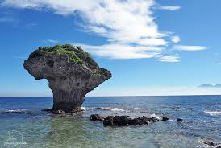
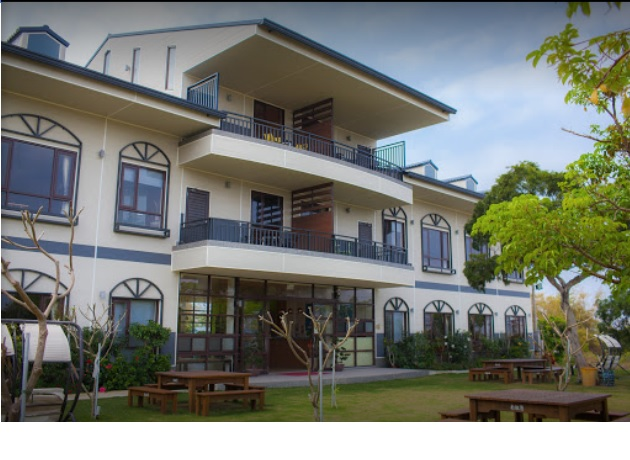

←小琉球

民宿→

潮間帶探索
潮間帶是指位於海岸最高潮及最低潮間的區塊，劇烈的環境變化造成豐富的生態樣貌，
位於小琉球西側的肚仔坪及杉福漁港海岸平坦，於退潮期間非常適合觀察潮間帶物種。
琉戀幸福島，愛在小琉球
七月的小琉球，化成一座幸福島，小琉球湛藍的海水和獨特的珊瑚礁地景，柔美的夕照
和浪漫海灘，傳說的幸福島有愛神邱比特的祝福，來到幸福島的民眾，將擁有永遠的快樂。
水上活動
小琉球海域湛藍清澈，海底生態景觀豐富，最適合海上活動。香蕉船、浮潛、潛水，或搭
乘遊艇環島，亦可搭乘海底觀光船欣賞海底風景。
冬季旅遊
小琉球位於台灣本島西南方，於冬季時不受東北季風影響，十分適合旅遊。每年於秋冬之際
，除了不定期舉辦冬季運動會及美食大會，更有三年一度的迎王盛典邀您一同共相盛舉。
無碳島
溫室效應影響全球，享應節能省碳，小琉球預計推動「無碳旅遊島」計畫，利用替代性能
源取代石油燃料，減少二氧化碳排放量，推廣單車旅遊，保育小琉球這片美好的生態。
夜宿小琉球
小琉球的夜晚非常迷人，有豐富的夜間生態、美人洞的夜間小精靈－螢火蟲、北岸可遠
眺高雄閃爍燈火、或至貝殼沙廳聽濤、賞星。